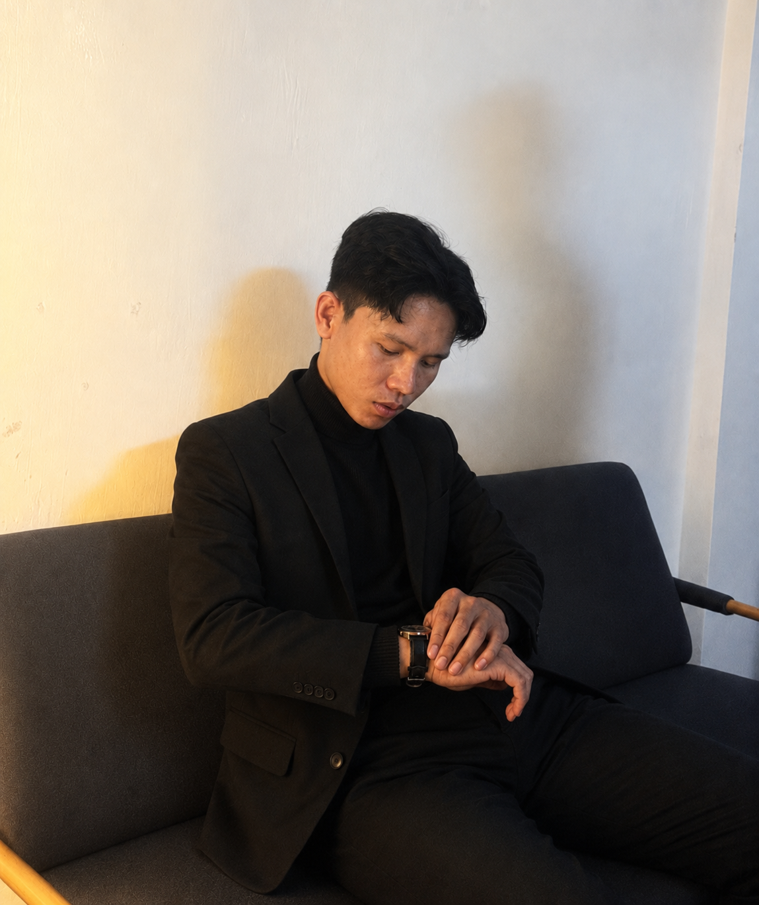

01 / Education
MSU-Sulu Course Guide
A course recommendation experience that helps students explore programs using their grades, interests, strengths, and skills.
I'm Jhonardz—a developer who builds responsive web platforms, cross-platform Flutter apps, AI-powered workflows, and IoT systems from interface to infrastructure.

Web • Mobile • AI • Embeddedconst product = {
useful: true,
maintainable: true,
builtToLast: true
};
01 / Selected work
Digital platforms for education, public service, productivity, compliance, and creative work—available to explore online.
A course recommendation experience that helps students explore programs using their grades, interests, strengths, and skills.
A digital information portal for notices, memoranda, school directories, events, search, and public updates.
A personal productivity app combining tasks, schedules, money tracking, and focus time.
A public-facing website for the Sangguniang Bayan ng Jolo, providing a dedicated online presence for local government information.
An MSU-Sulu workflow for submitting, reviewing, and approving student organization constitution and bylaws documents.
A public platform where creators can showcase projects, research, creativity, achievements, and their professional journey.
02 / Technical range
I work across the layers that turn an idea into a usable, maintainable product.
Responsive layouts, accessible interfaces, and clear interactions across screen sizes.
Application logic, APIs, cloud services, and relational or real-time data.
Cross-platform app development with integrated authentication, data, and serverless workflows.
Hardware-software integration for practical connected system prototypes.
Practical AI-assisted workflows that connect tools, reduce repetitive steps, and keep human review where it matters.
03 / How I work
Good engineering is more than making a feature work. It is understanding the problem, choosing sensible tradeoffs, and leaving the system better than you found it.
Align on the user, constraints, and definition of done before the build gets expensive.
Break the work into clear boundaries, data flows, and maintainable components.
Ship in focused increments, test the important paths, and refine from real feedback.
Make decisions visible so the next change is faster, safer, and easier to own.
04 / Start a conversation
Let's talk about the product, the engineering challenges, and how I can contribute.
abdulkadiljhonardz@gmail.com